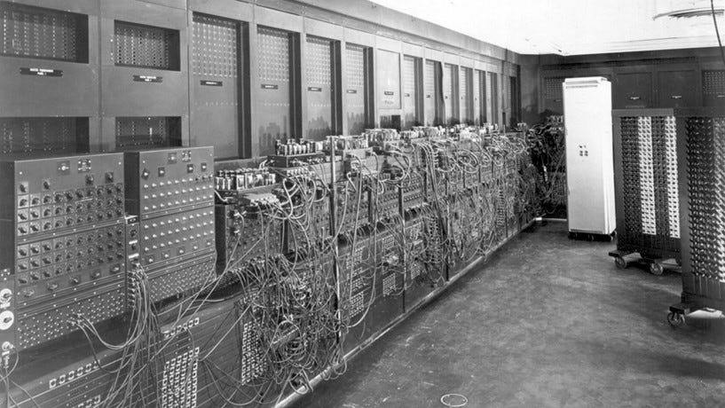

📋 Resumo
Para entender como chegamos à ideia de conectar computadores, precisamos mergulhar nas décadas de 1940 e 1950, um período marcado por guerra, espionagem, corrida tecnológica e os primeiros sonhos de máquinas capazes de pensar. É impossível falar desse período sem relembrar que o mundo estava em guerra, e que, pela primeira vez na história, cálculos matemáticos, códigos secretos e dispositivos eletrônicos passaram a determinar rumos políticos. A tecnologia deixou de ser apenas um campo de estudo e se tornou arma.
📚 Detalhes
Durante a Segunda Guerra Mundial, cientistas e matemáticos foram mobilizados por governos para tentar decifrar mensagens inimigas, prever trajetórias de bombardeios, calcular probabilidades de ataques e criar sistemas de comunicação mais eficientes. Nesse cenário, surgiram as primeiras máquinas eletrônicas programáveis, que ainda não eram “computadores” no sentido moderno, mas enormes equipamentos que funcionavam com milhares de válvulas, fios e interruptores. Elas ocupavam salas inteiras, aqueciam como fornos e exigiam equipes de engenheiros para funcionar.

Um dos grandes nomes dessa fase é Alan Turing, cujo papel foi tão crucial que muitos historiadores o chamam de “pai da computação moderna”. Trabalhando para o serviço de inteligência britânico, Turing liderou a equipe que criou máquinas capazes de quebrar o código da Enigma, o sistema criptográfico utilizado pelos nazistas. A máquina desenvolvida por ele e sua equipe em Bletchley Park, conhecida como “Bombe”, era uma das primeiras formas de automação da lógica, antecipando o conceito de algoritmo e mostrando que máquinas podiam executar processos repetitivos muito mais rápido que humanos. Estimativas históricas sugerem que o trabalho de Turing encurtou a guerra em pelo menos dois anos. Esse período é tão marcante que até hoje inspira filmes e séries.

Enquanto Turing trabalhava na Inglaterra, nos EUA outros cientistas criavam máquinas ainda mais ambiciosas. Em 1945 foi concluído o ENIAC (Electronic Numerical Integrator and Computer), considerado por muitos o primeiro computador eletrônico de propósito geral. Ele tinha cerca de 18 mil válvulas e pesava mais de 30 toneladas. Seu objetivo inicial era calcular tabelas balísticas para o Exército norte-americano, mas logo demonstrou capacidade para realizar cálculos complexos que, antes, levariam dias ou semanas. Esse período também viu a união inédita entre universidades, exércitos e laboratórios privados. Harvard, MIT, Bell Labs, Princeton e o laboratório Los Alamos (do Projeto Manhattan) se tornaram centros de inovação científica. As necessidades militares e nucleares exigiram novas formas de processamento e armazenamento de informação, o que levou ao desenvolvimento de tecnologias como fitas magnéticas, cartões perfurados e memórias mais estáveis. Paralelamente ao hardware, surgia um pensamento matemático novo sobre informação.
Em 1948, Claude Shannon publicou seu artigo “A Theory of Communication”, considerado a obra fundadora da teoria da informação. Shannon demonstrou que qualquer tipo de informação — texto, imagem ou som — podia ser convertido em códigos binários (0 e 1). Essa descoberta não apenas permitiu a construção de sistemas digitais, mas também abriu caminho para pensar comunicação à distância de forma eficiente, com correção de erros e padronização. Sem Shannon, não haveria internet, compressão de dados, Wi-Fi, redes móveis nem criptografia moderna.
Outro avanço marcante da época foi o trabalho de John von Neumann, que descreveu uma arquitetura de computador capaz de armazenar programas na memória, criando o modelo que praticamente todos os computadores seguem até hoje. Essa ideia de que máquinas poderiam modificar seu próprio comportamento ao ler instruções armazenadas – os programas – foi revolucionária e iniciou a era da computação programável.
A influência política e militar desse período também não pode ser subestimada. A Segunda Guerra terminou em 1945, mas logo entrou em cena a Guerra Fria, ampliando a corrida científica entre EUA e União Soviética. A ameaça de espionagem, ataques nucleares e sabotagem fez com que os EUA investissem massivamente em pesquisa. Esse clima deu origem a organizações como a RAND Corporation e, mais tarde, a própria DARPA (1958), que se tornaria o berço da ARPANET — o embrião da internet. Mas mesmo antes dela, a década de 1950 já estava repleta de centros de pesquisa militares tentando melhorar comunicações, radares, satélites e sistemas de defesa. Culturalmente, a crença em máquinas inteligentes começou a aparecer na literatura e na ficção científica. Isaac Asimov publicava suas histórias dos robôs (as famosas Três Leis da Robótica), que ajudaram a moldar a visão popular de inteligência artificial. Revistas de ciência, como Scientific American e Popular Mechanics, começaram a destacar computadores como “máquinas do futuro”, ainda que restritas ao ambiente militar e científico.
Do ponto de vista tecnológico, os computadores de 1940 e 1950 eram extremamente limitados, mas abriram as portas para tudo o que viria. Eles funcionavam com válvulas (que queimavam facilmente), tinham pouquíssima memória, eram lentos e difíceis de programar. Mesmo assim, provaram que era possível automatizar cálculos complexos e processar grandes volumes de dados — pré-requisitos fundamentais para a interconexão futura. Ao final dos anos 1950, apesar de a internet ainda não existir nem como conceito, a humanidade já possuía os ingredientes essenciais para inventá-la: máquinas capazes de processar dados eletronicamente, uma teoria matemática que descrevia como a informação poderia ser transmitida, um ambiente político que demandava comunicação segura e confiável, e uma comunidade de cientistas preparada para imaginar novas formas de conectar dispositivos. Assim, a década de 1940–1950 é mais do que o “prólogo” da internet. Ela é o terreno fértil onde ideias matemáticas, necessidades militares, avanços eletrônicos e teorias revolucionárias se encontraram. Antes mesmo de existir a palavra “internet”, já existia o desejo de acelerar a informação, decodificá-la, armazená-la e automatizá-la. Esse conjunto de avanços criou o solo científico, técnico e cultural que permitiria, algumas décadas depois, conectar o mundo inteiro.
Filme: “O Jogo da Imitação” (2014).
Trailer: https://www.youtube.com/watch?v=YIkKbMcJL_4&t=1s
.Documentario: “Codebreakers” (2011).
Trailer: https://www.youtube.com/watch?v=STRfkfUlQdA
.Artigo: “A Theory of Communication” - Claude Shannon.
PDF: https://people.math.harvard.edu/~ctm/home/text/others/shannon/entropy/entropy.pdf
.Livro: “The Information” - James Gleick.
Compra: https://www.amazon.com.br/informa%C3%A7%C3%A3o-James-Gleick/dp/8535922660
.Livro: “ENIAC: The Triumphs and Tragedies of the World's First Computer” - Scott McCartney.
Compra: https://www.amazon.com/ENIAC-Triumphs-Tragedies-Computer-Library/dp/1455128058
.🔗 Fontes de Pesquisa